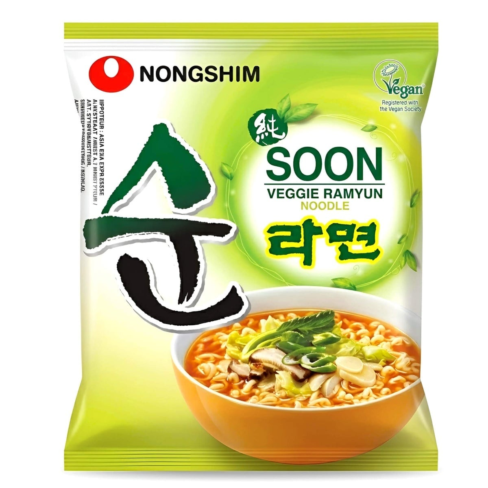
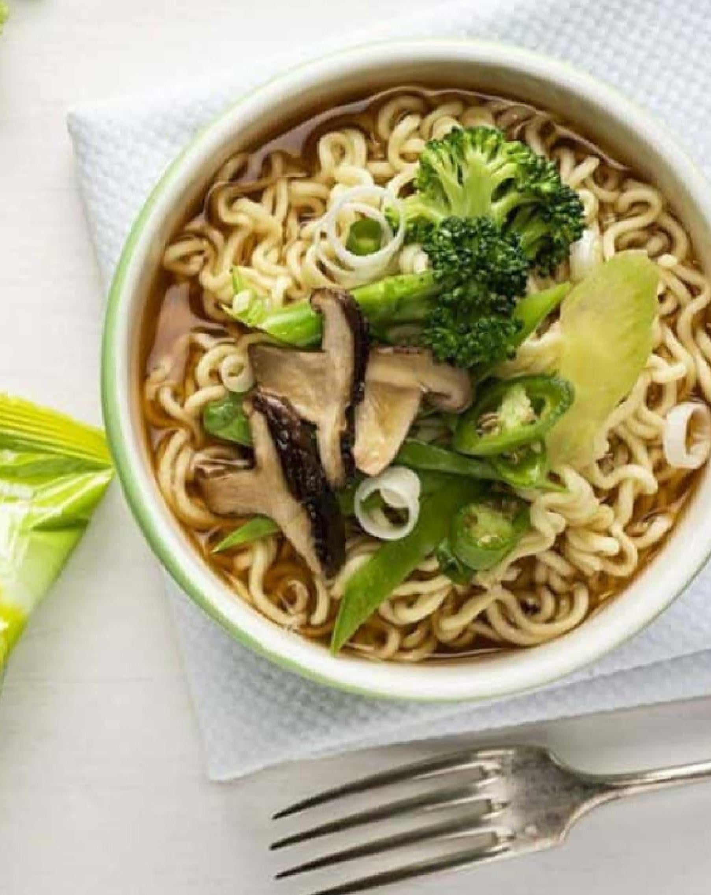
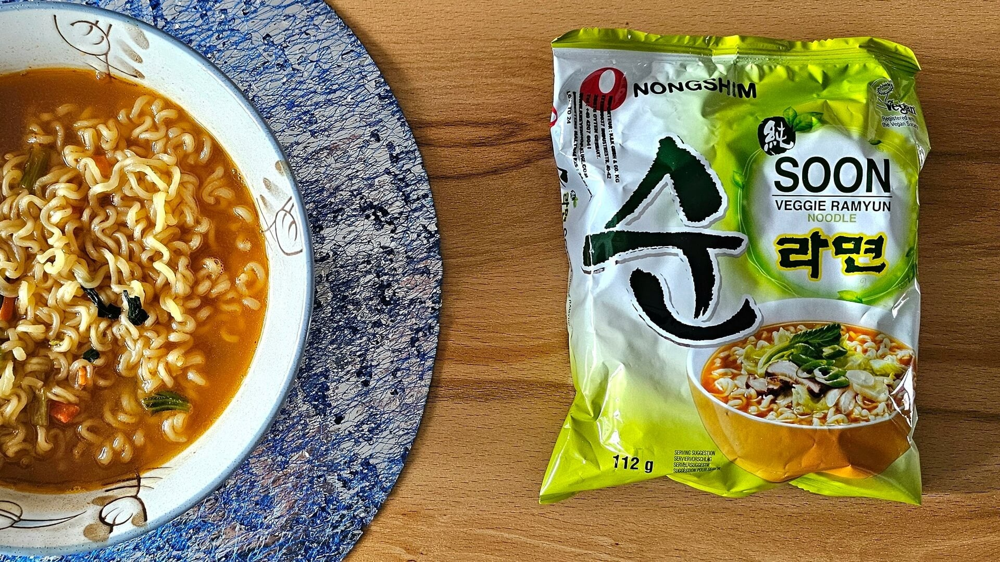

<div> <table style="border-collapse: collapse; width: 99.9809%;" border="1"><colgroup><col style="width: 49.9522%;"><col style="width: 49.9522%;"></colgroup> <tbody> <tr> <td> <div><span style="font-size: 14pt;"><strong>Ramyun vegan Nongshim Soon, 112g</strong></span></div> <div><span style="font-size: 14pt;">Cauți o opțiune 100% vegetală și delicioasă? Nongshim Soon Veggie Ramyun (112g) este certificat vegan și aduce gustul pur al legumelor &icirc;ntr-o supă fină, fără ingrediente de origine animală. Tăițeii fini și bulionul aromat oferă o experiență culinară coreeană autentică, potrivită pentru oricine!</span></div> </td> <td></td> </tr> <tr> <td></td> <td><span style="font-size: 14pt;">Bucură-te de o masă caldă, plină de prospețime! Tăițeii Nongshim Soon Veggie sunt perfecți pentru a fi &icirc;mbogățiți cu ciuperci shiitake, broccoli și ceapă verde. Textura lor elastică și supa limpede creează baza ideală pentru un bol ramyun personalizat, sănătos și extrem de gustos.</span></td> </tr> <tr> <td><span style="font-size: 14pt;">O masă rapidă, caldă și plină de savoare! Nongshim Soon Veggie Ramyun (112g) &icirc;ți oferă o supă aromată, ușor condimentată, pregătită &icirc;n doar c&acirc;teva minute. Este alternativa perfectă pentru pr&acirc;nz sau cină atunci c&acirc;nd vrei să te bucuri de gustul ramyun-ului coreean la tine acasă.</span></td> <td></td> </tr> </tbody> </table> </div>